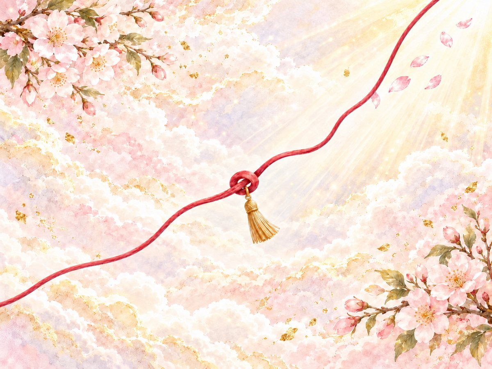
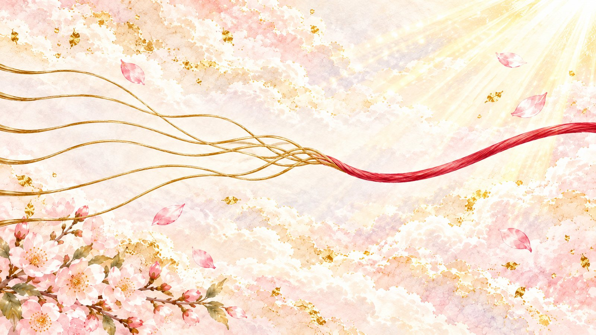
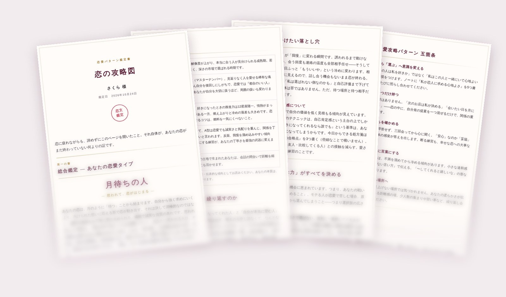

恋の攻略図
恋愛パターン鑑定
ホントの自分で、
なぜか？愛される。
「今度こそ」と思った恋で、
また同じことで悩んでいませんか。
生年月日と25の質問から、自分の恋のクセと、自分に合う恋の進め方を読み解き、一冊の鑑定書にまとめます。
無料で恋のクセを見てみる 約7〜10分／第一の書は無料本編は500円（税込）。無料の結果を読んでから選べます

一いつも、同じところでつまずく
- 追いかけると燃えるのに、追われると冷めてしまう
- 長く続くのに、心から好きになれる人に出会えない
- 大事にしてくれる人がいるのに、選ぶのはいつも似たような人
- 好きになるほど不安になって、自分らしくいられなくなる
それは性格の欠点ではなく、恋の「クセ」です。
クセは、知ってしまえば攻略できます。
二二つの視点を重ねて読み解きます
生まれ持った資質
生年月日から数秘術と星座を読み解き、もともとの恋の傾向と、今年の恋の流れを出します。
今の心のクセ
25の質問から、恋愛で無意識にとっている行動や、相手との距離の取り方を読み取ります。
この二つを重ね合わせて、自分の恋愛タイプと、自分に合った恋の進め方を読み解きます。
三同じタイプでも、鑑定書は一人ずつ違う
恋愛タイプは、鑑定書の入り口です。そこに、いくつもの糸を重ねて読み解きます。
- 生年月日から読む、数秘と星座
- 25の質問から見える、心のクセ
- 人との距離の取り方を映す、愛着スタイル
- 恋のバランスを映す、レーダーチャート
- 今年の恋の流れ
だから、同じタイプの人でも、
記される内容は一人ずつ変わります。
「月待ちの人」「篝火の人」「北極星の人」……自分がどんな恋をする人なのかは、鑑定の結果で。

四鑑定書に記すこと
第一の書
無料- 自分の恋愛タイプ
- 恋のバランスを映すレーダーチャート
- 自分の愛着スタイル
自分の恋のクセがわかったら、
次は「どう進めるか」へ。
「たしかに、こういう恋をしやすい」。そう感じたあとに知りたくなるのは、「じゃあ、これからどうしたらいい？」ということ。本編では、繰り返しやすい恋のパターンと落とし穴を読み解き、自分に合った恋の進め方を五箇条に。さらに、これから取り組めることを90日の実践プランにまとめます。
本編 第二〜第九の書
500円（税込）- 同じ恋を繰り返してしまう本当の理由
- 気をつけたい恋の落とし穴
- 自分専用の恋愛攻略パターン 五箇条
- 相性の良い相手
- 今年の恋の流れ
- 「なりたい未来」へ進む90日の実践プラン
A4・4枚の鑑定書として、保存・印刷できます。
第一の書を読んでから、続きを読むかどうか決められます。

本編より、ほんの一部をご紹介します（月待ちの人の場合）
第三の書
恋のクセの正体 — なぜ、繰り返すのか
月待ちの人がつまずくのは、「好きになってくれた人」と「自分が本当に望む人」のズレです。アプローチされると悪い気はせず、断るのも申し訳なくて、なんとなく始まる恋。けれど心のどこかで「この人でいいのかな」という小さな声が消えない。
この続きは本編で
第六の書
あなた専用・恋愛攻略パターン 五箇条
違和感は48時間以内に言葉にする
我慢グセのあるあなたは、不満を溜めてから冷める傾向があります。
この続きは本編で
続きと、ほかの四箇条は本編で。自分のタイプと回答に合わせた内容が記されます。
五この鑑定をつくった人
六鑑定の流れ
- 生年月日を入力し、25の質問に答える所要時間は約7〜10分です。
- 第一の書を無料で読む恋愛タイプ・レーダーチャート・愛着スタイルがすぐにわかります。
- 続きを読みたい方は、本編を申し込む鑑定書の中の「本編を購入する」ボタンからお申し込みいただけます。
- 届いたメールのリンクから、本編を読むお支払い後、解除コードのメールが自動で届きます。
七よくある質問
占いですか？
数秘術と星座を取り入れていますが、未来を言い当てたり断定したりするものではありません。自分の傾向を知って、恋の進め方を考えるための鑑定です。
本当に無料で読めますか？
はい。第一の書は無料で、最後まで読めます。本編に進むかどうかは、読んだあとで決められます。
支払い方法は何がありますか？
クレジットカード（PayPal経由）でお支払いいただけます。PayPalのアカウントをお持ちでなくても、カードでそのままお支払いいただけます。
解除コードのメールが届きません
迷惑メールフォルダに入っていないかご確認ください。それでも見つからない場合は、特定商取引法に基づく表記の連絡先までご連絡ください。
スマートフォンでも使えますか？
はい。スマートフォンでもパソコンでもお使いいただけます。鑑定書はA4サイズで印刷もできます。
結自分の恋の地図を、ひらく
まずは無料の第一の書で、
自分の恋愛タイプを確かめてみてください。
本編は500円（税込）。無料の結果を読んでから選べます